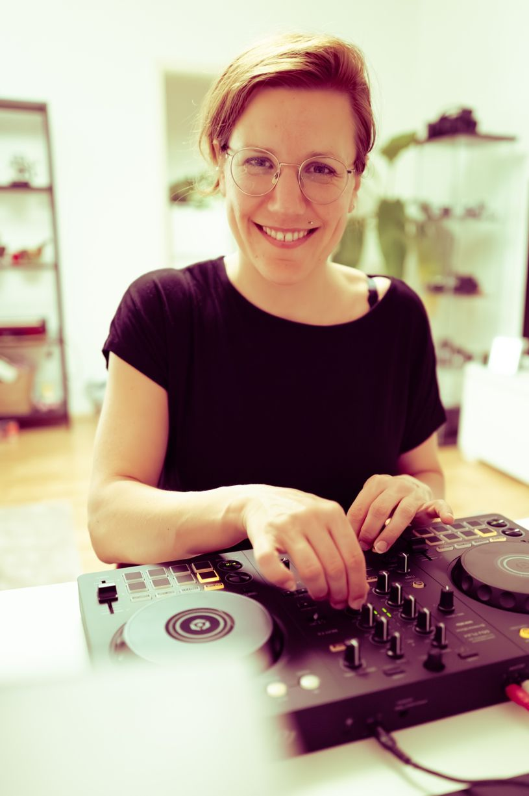

DJ Urška was born in 1988 and raised in Ljubljana, Slovenia. She currently lives in Munich, Germany.
Growing up in a musical family, she developed a passion for music from an early age. Besides playing the guitar, she sings in several ensembles, including a cappella groups and a jazz band.
Her interest in DJing began when friends asked her to DJ at their wedding. Inspired by the experience, she bought her first DJ controller and started exploring the craft on her own.

In 2026, she received a birthday gift that marked another highlight of her DJ journey: three 45-minute personal DJ workshops at Raum 45 with the renowned Munich-based DJ Felix Gott
Outside of music, Urška holds a doctoral degree in mathematics. Whether it is her analytical mindset and years of mathematical training that allow her to craft such memorable sets, or simply pure talent, remains a subject of ongoing debate.